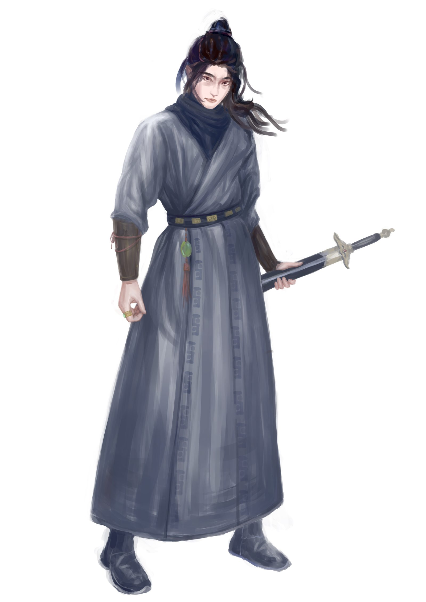

陈东
服装与服饰设计 · 吉林动画学院
我是陈东，吉林动画学院服装与服饰设计专业学生。我的创作围绕中国传统服饰文化展开： 从《山海经》异兽的服饰衍生，到清代服饰的复原制作，再到以云锦、苏绣等非遗工艺为灵感的当代设计。
除了服装本身，我也做 IP 形象设计与数字插画，相信角色与纹样都是讲故事的方式。 希望让传统美学以更轻松、更日常的姿态，走进当代生活。
技能与工具
项目与实践
- 课程项目《山海经之毕方》服装制作 —— 山海经主题服饰的设计与实物制作
- 课程项目《可持续设计》— 可持续理念在服装设计中的应用探索
- 实践课程演艺服装设计实践（六组）— 舞台演艺服装的设计实践
- 创新训练大学生创新创业训练计划项目（吉林动画学院）
- 工作坊「逆向未来」大师工作室 —— 国际专家工作坊研修
参赛经历
- 好创意大赛系列服装设计《星空潮行者》
- 中国好礼IP 形象设计《青小鼎》— 以青铜器为原型的 IP 及衍生品设计
- 效果图大赛服装设计效果图大赛《雁风中的锦》— 云锦非遗主题
- 漫画大赛「悟空杯」中日韩青少年漫画大赛
联系方式
邮箱：your-email@example.com
GitHub：github.com/your-username
（以上为占位信息，替换为你的真实联系方式即可）